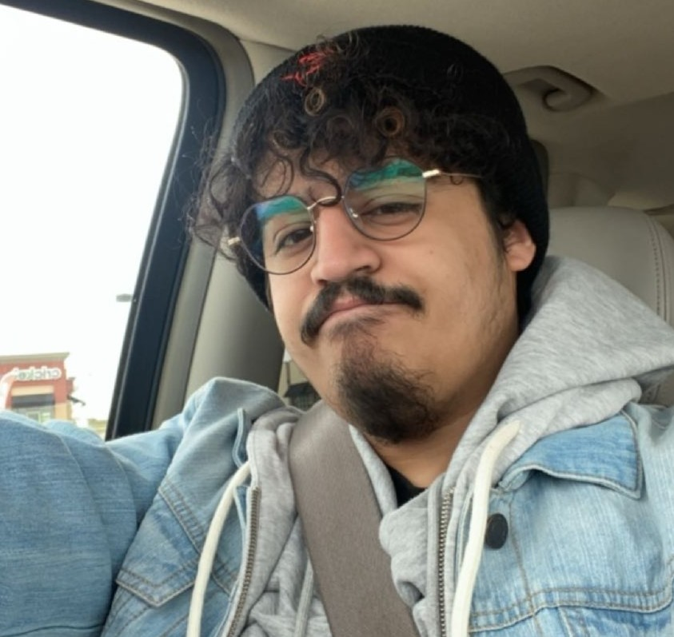

Gamer by birth, legend by choice.
About Me

Hello readers! This page is just a few things about myself. I was born and raised in Philadelphia, Pa until I was 22. That is when I moved to central Illinois, where I currently live. A couple fun facts about me is that I am currently to play guitar, I do know how play saxophone, and I am currently learning to speak Japanese. My future goals are 2 simple things: to get a career in game or video design, and open up a cat cafe. I am a big cat person, as I care of many indoor and outdoor cats. I really love to bake and I have had a job as a barista for many years. I believe a cat cafe can work perfect for me in older years! I have played video games since I was able to hold a controller and have had every console since. One day, I would love to be apart of a project as a career!
Three Fun Facts
I Play a Few Instruments
I am currently practicing guitar so not quite great. But I have played saxophone since 6th grade of middle school!
I am learning Japanese
My first language is English, but I am currently learning Japanese on Duolingo!
I am a Streamer
I love to stream my games on my Twitch Channel whenever I can. When I receive donations on my streams, they will go towards my cat, Hades, medications and helping in paying for his liver care needs!